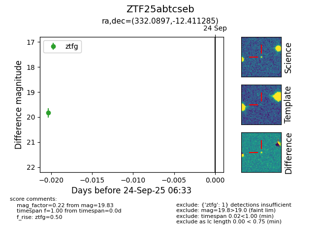

FINK: ZTF25abtcseb
Lasair: ZTF25abtcseb
ALeRCE: ZTF25abtcseb
ZTF25abtcseb (ztf,fink)
equatorial (ra, dec) = (332.0897,-12.41128)
galactic (l, b) = (45.8246,-49.13691)

last ztfg=19.83
1 ztfg detections